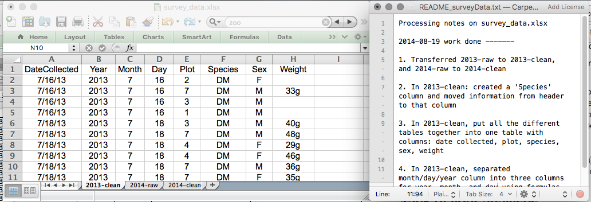
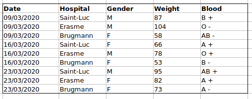
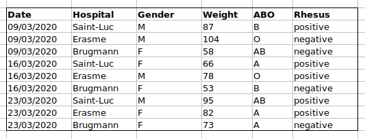
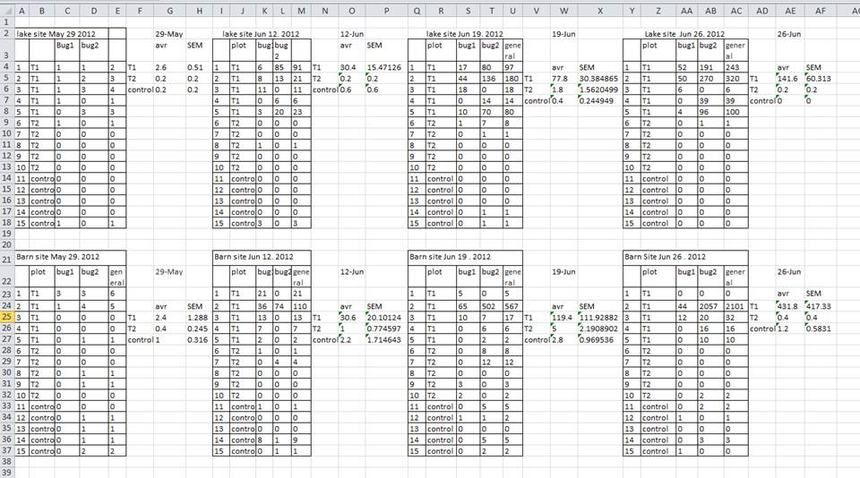

スプレッドシートによるデータ整理
最終更新日：2026-11-07 | ページの編集
所要時間： 60分
概要
質問
- 表形式データの整理方法は？
目的
- スプレッドシートとその長所・短所について学びましょう。
- データを効果的に活用するために、スプレッドシートではどのようにデータを整形すればよいでしょうか。
- スプレッドシートでよくあるエラーと、その修正方法について学びましょう。
- 整然データの原則に従ってデータを整理してください。
- カンマ区切り（CSV）やタブ区切り（TSV）などのテキストベースのスプレッドシート形式について学びましょう。
このエピソードは、Data Carpentriesの「生態学者のためのRによるデータ分析と可視化」レッスンに基づいています。
スプレッドシートソフト
質問
- データを適切に整理するためのスプレッドシート活用の基本原則とは何でしょうか？
目的
- コンピュータがデータセットを最大限に活用できるよう、データを整理する際のベストプラクティスについて説明してください。
要点
- 適切なデータ整理は、あらゆる研究プロジェクトの基盤となります。
適切なデータ整理は、研究プロジェクトの基盤となります。ほとんどの研究者は、スプレッドシートでデータを扱ったり、データ入力を行ったりしています。スプレッドシートソフトは、データテーブルの設計や、ごく基本的なデータ品質管理機能を利用する上で非常に有用なグラフィカルインターフェースです。 Broman and Woo (2018). も参照してください。
スプレッドシートの構成
スプレッドシートはデータ入力に適しています。そのため、スプレッドシートには膨大なデータが蓄積されています。研究者としての時間の多くは、この「データ加工」の段階に費やされることになります。決して楽しい作業ではありませんが、不可欠なものです。ここでは、データの整理方法や、より効率的なデータ加工のための実践的な手法について解説します。
このレッスンで学べないこと
- スプレッドシートで統計を行う方法
- スプレッドシートでグラフ作成を行う方法
- スプレッドシートソフトでコードを書く方法
これをやってみたい場合は、O’Reilly社から出版されている『Head First Excel』が参考になります。
なぜスプレッドシートでのデータ分析を教えないのでしょうか？
スプレッドシートでのデータ分析には、通常、多大な手作業を要します。パラメータを変更したり、新しいデータセットで分析を実行したりしたい場合、通常はすべてを手作業でやり直さなければなりません。（マクロを作成できることは承知していますが、次の項目をご覧ください。）
また、作業に戻ったり、誰かに分析の詳細を求められたりした際に、スプレッドシートソフトで行った統計解析やグラフ作成の経緯を追跡したり再現したりすることは困難です。
数多くのスプレッドシートソフトが利用可能です。ほとんどの受講者が主要なスプレッドシートソフトとしてExcelを使用しているため、本レッスンではExcelの例を用います。また、無料で利用できるスプレッドシートソフトとしてLibreOfficeもあります。プログラムによってコマンドが多少異なる場合がありますが、基本的な考え方は同じです。
スプレッドシートソフトには、研究者として必要となる機能の多くが盛り込まれています。以下のような用途に活用できます。
- データ入力
- データの整理
- データの抽出と並べ替え
- 統計学
- プロット
スプレッドシートソフトでは、表を用いてデータを表現・表示します。表形式でフォーマットされたデータは本章の主要なテーマでもあり、後続の解析を効率的に行うために、データを標準的な方法で表にまとめる方法について解説します。
課題：隣の人と以下の点について話し合ってください。
- 研究や授業、あるいは自宅でスプレッドシートを使ったことはありますか？
- スプレッドシートではどのような操作を行いますか？
- スプレッドシートはどのような用途に向いていると思いますか？
- スプレッドシートソフトで、うっかり何かをしてイライラしたり、がっかりしたりしたことはありますか？
スプレッドシートの問題点
スプレッドシートはデータ入力に適していますが、実際にはデータ入力以外にも幅広く利用されています。論文用のデータテーブルの作成や、要約統計量の算出、図表の作成などに活用されています。
出版用の表をスプレッドシートで作成するのは最適ではありません。出版用にデータ表をフォーマットする際、主要な要約統計量を本来データとして読み取られることを想定しない形式で提示することが多く、また特殊な書式設定（セルの結合、罫線の設定、見栄えの調整など）を伴うことがよくあります。こうした作業は、文書編集ソフト内で行うことをおすすめします。
後者の2つの用途、すなわち統計量や図表の作成については、注意が必要です。スプレッドシートプログラムはグラフィカルなドラッグ＆ドロップ方式であるため、特に統計量や図表の作成により複雑な計算が必要な場合、自身の操作手順を再現することは極めて困難、あるいは不可能に近いと言えます。さらに、スプレッドシートで計算を行う際は、隣接する複数のセルに誤ってわずかに異なる数式を適用してしまいがちです。RやSASのようなコマンドラインベースの統計プログラムを使用する場合、意図的に行わない限り、データセット内のある観測値には計算を適用し、別の観測値には適用しないということは事実上不可能です。
スプレッドシートにおけるデータテーブルの書式設定
質問
- データを効果的に活用するために、スプレッドシートではどのようにデータを整形すればよいでしょうか。
目的
スプレッドシートにおけるデータ入力と書式設定のベストプラクティスについて説明してください。
スプレッドシートで変数と観測値を整理する際は、ベストプラクティスを適用してください。
要点
生データは絶対に変更しないでください。変更を加える前には、必ずコピーを作成してください。
データのクリーニングで行ったすべての手順を、プレーンテキストファイルに記録しておいてください。
整然データの原則に従ってデータを整理してください。
最もよくある間違いは、スプレッドシートソフトを実験ノートのように扱ってしまうことです。つまり、文脈や余白のメモ、データやフィールドの配置に頼って情報を伝えようとすることです。人間であれば（通常は）こうした情報を解釈できますが、コンピュータは同じように情報を捉えません。一つひとつの要素が何を意味するのかをコンピュータに説明しない限り（これは難しい作業です！）、コンピュータはデータ同士がどのように関連し合っているのかを理解することができません。
コンピュータの力を活用すれば、はるかに効率的かつ迅速にデータを管理・分析できます。しかし、その力を活かすには、コンピュータが理解できる形でデータを準備する必要があります（コンピュータは非常に文字通りに解釈するためです）。
だからこそ、最初の予備実験でデータ入力を始める前から、あらかじめ適切にフォーマットされた表を用意しておくことが極めて重要なのです。データの整理は研究プロジェクトの基盤となります。分析を進める過程でデータの扱いが容易になることもあれば、逆に困難になることもあるため、データ入力や実験のセットアップを行う段階で検討しておく価値があります。スプレッドシートではさまざまな方法で設定できますが、その選択によっては、他のプログラムでデータを扱ったり、半年後の自分や共同研究者がデータを扱う際に支障をきたしたりする可能性があります。
注： データ入力やデータ分析に最適なレイアウトやフォーマット（ならびにソフトウェアやインターフェース）は、それぞれ異なる場合があります。この点に留意し、理想的には一方から他方への変換を自動化することが重要です。
解析の記録管理
スプレッドシートを用いてデータの整理や分析を行っていると、元の状態とは大きく異なるスプレッドシートになってしまうことがよくあります。分析結果を再現したり、査読者や指導教員から別の分析を求められた際に何を行ったかを確認したりするためには、
クリーニングまたは解析済みのデータを用いて、新しいファイルを作成してください。元のデータセットは変更しないでください。さもないと、どこから始めたのか分からなくなってしまいます！
クリーニングや解析で行った手順を記録しておいてください。これらの手順は、実験における他の手順と同様に記録してください。データファイルと同じフォルダに保存したプレーンテキストファイルに記録することをお勧めします。
これはスプレッドシートの構成例かもしれません。

これらの原則を、本日の演習で早速実践してみましょう。
本コースではバージョン管理は範囲外となりますが、データのバージョン管理方法については、The Carpentriesの‘Git’に関するレッスンをご参照ください。また、簡単なチュートリアルについてはこちらのブログ記事を、より研究向けの活用事例については Perez-Riverol et al. (2016) をご覧ください。
スプレッドシートでのデータ構造化
データ処理にスプレッドシートソフトを使用する際の基本原則：
- すべての変数を列に配置してください。「weight」や「temperature」のように、測定対象となるものです。
- 各観測値をそれぞれ別の行に記述してください。
- 1つのセルに複数の情報をまとめて入力しないでください。一見すると1つの項目のように見えても、データの利用や並べ替えにおいて、その方法しか選択肢がないのかどうかを考えてみてください。
- 生データはそのままにしておいてください。変更しないでください！
- クリーニング済みのデータをCSV（カンマ区切り値）形式などのテキストベースの形式でエクスポートしてください。これにより、誰でもデータを利用できるようになります。また、ほとんどのデータリポジトリでこの形式が求められています。
例えば、ベルギーのブリュッセルにある複数の病院を受診した患者のデータがあります。そこには、受診日、病院、患者の性別、体重、および血液型が記録されています。
このようにデータを管理したとしたら：

問題は、ABO群とRhesus群が同じBlood型の列にあることです。そのため、A群のすべての観測値を確認したり、ABO群ごとの体重分布を調べたりしたい場合、このデータ構成では困難になります。代わりにABO群とRhesus群を別々の列に配置すれば、はるかに簡単になることがわかります。

データシートを作成する際の重要なルールは、列を変数に、行を観測値に用いることです。
- 列は変数です。
- 行は観測値です。
- セルは個々の値です。
課題：乱雑なデータセットを取り上げ、どのようにクリーニングするかを説明します。
こちらのリンクをクリックして、乱雑なデータセットをダウンロードしてください。
スプレッドシートソフトでデータを開いてください。
2つのタブがあることがわかります。データには、2020年の新型コロナウイルス感染症の第1波および第2波の際に、ブリュッセルのさまざまな病院で記録された多様な臨床変数が含まれています。ご覧の通り、3月の波と11月の波では、データの記録方法が異なります。さて、あなたはこのプロジェクトの担当者となり、データの分析に取りかかりたいと考えています。
隣の人と一緒に、このスプレッドシートの問題点を指摘してください。また、第1波と第2波のタブを整理し、それらを一つのスプレッドシートにまとめるためにどのような手順を踏む必要があるかについても話し合ってください。
重要： 最初のアドバイスを忘れないでください。クリーニング済みデータ用の新しいファイル（またはタブ）を作成し、元の（生の）データは絶対に修正しないでください。
この演習を終えた後、このデータのどこに問題があったのか、そしてどのように修正すべきかについて、グループで話し合います。
課題：データを整理したら、以下の質問に答えてください。
- この研究には男女それぞれ何人が参加しましたか？
- A型、AB型、B型はそれぞれ何例検査されましたか？
- 上記と同様ですが、汚染サンプルを除外した場合はどうなりますか？
- Rhesus +と-はそれぞれ何例検査されましたか？
- これまでに何人の万能ドナー（O-）が検査されましたか？
- AB型男性の平均体重はどれくらいですか？
- 各病院でいくつの検体が検査されましたか？
特にRのスクリプトに関しては、Tidy Dataの論文 Wickham (2014). が優れた参考資料となります。
スプレッドシートでよくある間違い
質問
- スプレッドシートでデータをフォーマットする際によくある課題にはどのようなものがあり、それらをどのように回避できるでしょうか。
目的
- スプレッドシートでよくある書式の問題を認識し、解決します。
要点
- 1つのスプレッドシート内で複数の表を使用することは避けてください。
- データを複数のタブに分散させないようにしてください。
- 0は0として記録してください。
- 欠損データの記録には、適切なヌル値を使用してください。
- 情報を伝えたり、スプレッドシートの見栄えを良くしたりするために、書式設定を使用しないでください。
- コメントは別の列に記入してください。
- 列見出しに記録単位を記載してください。
- セルには情報を1つだけ入力してください。
- 列見出しにスペース、数字、特殊文字は使用しないでください。
- データに特殊文字を含めないようにしてください。
- メタデータは別のプレーンテキストファイルに記録してください。
ご自身のデータだけでなく、共同研究者やインターネットから入手したデータにおいても、注意すべき潜在的なエラーがいくつかあります。こうしたエラーや、その後のデータ分析および結果の解釈に及ぼし得る悪影響を認識していれば、ご自身やプロジェクトメンバーがそれらを回避しようという意欲につながるでしょう。スプレッドシートでのデータ書式設定にわずかな変更を加えるだけでも、データのクリーニングや分析における効率性と信頼性に大きな影響を与える可能性があります。
- 複数の表の使用
- 複数のタブの使用
- ゼロを補完しない
- 問題のある欠損値の使用
- 書式を用いて情報を伝える
- 書式設定でデータシートをきれいに見せる
- セルへのコメントや単位の入力
- セルに複数の情報を入力する
- 問題のあるフィールド名の使用
- データにおける特殊文字の使用
- データテーブルへのメタデータの組み込み
複数の表の使用
よくある手法として、1つのスプレッドシート内に複数のデータテーブルを作成することが挙げられます。これはコンピュータを混乱させるため、絶対に行わないでください！1つのスプレッドシート内に複数のテーブルを作成すると、コンピュータは各行を観測値として扱うため、データ間に誤った関連性を導き出してしまいます。また、同じフィールド名を複数箇所で使用する可能性もあり、そうなるとデータを使いやすい形式に整理することがより困難になります。以下の例がその問題を示しています：

上記の例では、コンピュータは（例えば）4行目を認識し、列A～AFがすべて同一のサンプルを指していると判断します。この行は実際には、4つの異なる採取日（5月29日、6月12日、6月19日、6月26日）それぞれのサンプル1という4つの個別のサンプルと、そのうち2つのサンプルに関する算出済みの要約統計量（平均値（avr）および測定標準誤差（SEM））を表しています。他の行も同様に問題があります。
複数のタブの使用
では、ワークブックのタブはどうでしょうか。データを整理する簡単な方法に思えますよね。ですが、一概にそうとは言えません。タブを追加してしまうと、データに存在する関係性をコンピュータに認識させることができなくなります（この関係性を確保するには、スプレッドシートアプリケーション固有の関数やスクリプトを導入する必要があります）。例えば、測定を行う日ごとに個別のタブを作成したとしましょう。
これは2つの理由から、好ましくない手法です。
測定を行うたびに新しいタブでデータの記録を始めると、誤ってデータに不整合が生じやすくなります。また、
たとえあらゆる不整合の混入を防げたとしても、これらのデータを一つのデータテーブルに統合する必要があるため、分析前に余計な手間がかかることになります。タブをどのように統合するかをコンピュータに明示的に指示しなければならず、もしタブの書式が統一されていない場合は、手作業で行わなければならないことさえあります。
次にデータを入力する際、別のタブやテーブルを作成しようとしたら、元のスプレッドシートに列を一つ追加するだけで、このタブを省けないか考えてみてください。乱雑なデータファイルの例では複数のタブを使用しましたが、これでデータを再構成し、タブを統合する方法がお分かりいただけたかと思います。
実験が進むにつれて、データシートが非常に長くなることがあります。スプレッドシートの上部に見出しが表示されないと、データの入力が困難になります。ただし、見出し行を繰り返さないでください。見出し行がデータに紛れ込みやすく、後々問題の原因となることがあります。代わりに、列見出しを固定すれば、行数の多いスプレッドシートでも見出しを表示したままにできます。
ゼロを補完しない
何かを測定する場合、通常はゼロになることがあります。例えば、調査でウサギが観察された回数などです。ほとんどがゼロなのに、わざわざその列に「0」と書き込む必要があるでしょうか。
ただし、スプレッドシートにおける「0」と「空白セル」は異なります。コンピュータにとって、0は実際にはデータです。測定またはカウントされたものです。一方、空白セルは測定されなかったことを意味し、コンピュータはそれを未知の値（ヌル値または欠損値とも呼ばれます）として解釈します。
スプレッドシートや統計ソフトでは、ゼロとして意図した空白セルが誤って解釈される可能性があります。観測値を入力しないことで、そのデータを「不明」または「欠損（null）」として扱うようコンピュータに指示することになります。これにより、後続の計算や分析で問題が生じることがあります。例えば、1つの欠損値を含む数値群の平均値は、常に欠損値となります（コンピュータが欠損した観測値の値を推測できないためです）。このため、ゼロはゼロとして、真に欠損しているデータは欠損値として記録することが極めて重要です。
問題のある欠損値の使用
例: -999やその他の数値（または0）を用いて欠損データを表す方法。
解答:
データセット内で欠損値がそれぞれ異なる形式で表現されるのには、いくつかの理由があります。測定機器から紛らわしい欠損値が自動的に記録される場合があります。その場合はどうすることもできませんが、分析前にOpenRefineのようなツールを用いてデータクリーニングを行うことで対処可能です。また、データが存在しない理由に応じて、異なる欠損値が使い分けられることもあります。これは把握しておくべき重要な情報ですが、実質的に1つの列で2つの情報を表現していることになります。書式を用いて情報を伝える場合と同様に、ここでも「data_missing」のような新しい列を作成し、その列で異なる理由を記録するのが良いでしょう。
理由はどうあれ、未知のデータや欠損データが-999、999、または0として記録されているのは問題です。
多くの統計ソフトでは、これらが欠損値（null値）を表す意図であるとは認識されません。これらの値がどのように解釈されるかは、データの解析に使用するソフトウェアによって異なります。明確に定義され、一貫したnull指標を用いることが不可欠です。
空白（ほとんどのアプリケーション）やNA（Rの場合）が適しています。 White et al. (2013) は記事の中で、さまざまなソフトウェアアプリケーションにおけるヌル値の表記として適切な選択肢について解説しています。

書式を用いて情報を伝える
例: 解析から除外すべきセル、行、または列をハイライトしたり、データの区切りを示すために空行を設けたりすることです。

解決策: 除外すべきデータをエンコードするための新しいフィールドを作成します。

書式設定を用いてデータシートの見栄えを整える
例: セルの結合。
解決策: 注意しないと、ワークシートの見栄えを良くするために書式設定を行うと、コンピュータがデータ内の関連性を認識できなくなる恐れがあります。セルを結合すると、統計ソフトでデータを読み取れなくなります。データを整理する際にセルを結合する必要がないよう、データの再構成を検討してください。
セルへのコメントや単位の入力
ほとんどの解析ソフトウェアはExcelやLibreOfficeのコメントを認識できず、データセル内に記述されたコメントを誤認してしまいます。書式設定について前述した通り、セルにメモを追加する必要がある場合は、別のフィールドを作成してください。同様に、セル内に単位を含めないでください。理想的には、1つの列に配置するすべての測定値は同じ単位であるべきですが、何らかの理由で異なる場合は、別のフィールドを作成し、そのセルの単位を指定してください。
セルに複数の情報を入力する
例: ABO型とRh型のグループを、A+、B+、A-…のように1つのセルに記録します。
解決策: 1つのセルに複数の情報を入れないでください。1つのセルに複数の情報を入れると、データの分析方法が制限されてしまいます。これら両方の測定値が必要な場合は、それらの情報を含めるようにデータシートを設計してください。例えば、ABO群用とRh群用にそれぞれ1列ずつ設けてください。
問題のあるフィールド名の使用
説明的なフィールド名を選択してください。ただし、スペースや数字、いかなる種類の特殊文字も含まないようご注意ください。スペースは、空白を区切り文字として使用するパーサーによって誤認される可能性があります。また、一部のプログラムでは、数字で始まるテキスト文字列のフィールド名を処理できない場合があります。
アンダースコア（_）はスペースに代わる有効な選択肢です。可読性を高めるため、名称はキャメルケース（例：ExampleFileName）で記述することを検討してください。現時点では意味が通じる略語であっても、6か月後には必ずしもそうとは限らない点に留意してください。ただし、名称を過度に長くしすぎないようにしましょう。フィールド名に単位を含めることで混乱を防ぎ、他者がフィールドの内容を容易に解釈できるようになります。
例
| 適切な名称 | 優れた代替案 | 避ける |
|---|---|---|
| Max_temp_C | MaxTemp | Maximum Temp (°C) |
| Precipitation_mm | Precipitation | precmm |
| Mean_year_growth | MeanYearGrowth | Mean growth/year |
| sex | sex | M/F |
| weight | weight | w. |
| cell_type | CellType | Cell Type |
| Observation_01 | first_observation | 1st Obs |
データにおける特殊文字の使用
例: メモを作成する際、スプレッドシートソフトをワードプロセッサのように扱い、例えばWordや他のアプリケーションからデータを直接コピーすることがあります。
解決策: これはよくある手法です。例えば、セルに長い文章を記述する際、スプレッドシートに改行やエムダッシュなどを含めることがよくあります。また、Wordなどのアプリケーションからデータをコピーすると、書式や特殊な非標準文字（左揃え・右揃えの引用符など）が含まれてしまいます。こうしたデータをコーディング・統計環境やリレーショナルデータベースにエクスポートすると、行が途中で切れたり、エンコーディングエラーが発生したりといった問題が生じる可能性があります。
一般的なベストプラクティスとしては、改行やタブ、垂直タブなどの文字を追加しないことが推奨されます。言い換えれば、テキストセルはテキストとスペースしか入力できないシンプルなウェブフォームであるかのように扱ってください。
データテーブルへのメタデータの組み込み
例: データテーブルの上部または下部に、列の意味や単位、例外事項などを説明する凡例を追加します。
解決策: データに関する情報（「メタデータ」）を記録しておくことは不可欠です。データの収集や分析を行っている最中はデータセットに精通しているかもしれませんが、数ヶ月、1年、あるいはそれ以上の時間が経過した後に、例えば変数「sglmemgp」がグループの単一メンバーを意味することや、変数の変換や派生変数の作成に使用した正確なアルゴリズムを、依然として覚えていられる可能性は低いでしょう。
また、他者があなたのデータを精査したり利用したりしたいと考える理由は数多くあります。得られた知見を理解するため、その妥当性を検証するため、投稿した論文を査読するため、結果を再現するため、同様の研究を設計するため、あるいは他者がアクセスし再利用できるようデータをアーカイブするためなどです。デジタルデータは定義上、機械可読ですが、その意味を理解するのは人間の役割です。研究の収集・分析段階においてデータを文書化することの重要性は、とりわけその研究が学術的記録の一部となる場合には、いくら強調してもしすぎることはありません。
ただし、メタデータはデータファイル自体に含めるべきではありません。論文の表や補足ファイルとは異なり、メタデータ（凡例形式）はデータではないため、データファイルに含めるべきではありません。また、これを含めると、コンピュータプログラムによるデータファイルの解釈に支障をきたす可能性があります。むしろ、メタデータはデータファイルと同じディレクトリに別ファイルとして保存し、できればデータファイルとの関連性が明確にわかる名称を付けたプレーンテキスト形式で保存してください。メタデータファイルは自由形式であるため、文書化は重要でありながらデータファイルのフォーマットを乱す可能性のあるコメントや単位、欠損値の符号化方法などの情報を記述することも可能です。
さらに、ファイルまたはデータベースレベルのメタデータでは、データセットを構成するファイル同士の関係性やフォーマット、およびそれらが以前のファイルに優先するか、あるいはそれらに取って代わられるかが記述されます。フォルダレベルの readme.txt ファイルは、プロジェクト内のすべてのファイルとフォルダを記録する定番の手法です。
（メタデータのテキストは、エディンバラ大学のEDINAおよびData Libraryによるオンラインコース「Research Data MANTRA」を基に作成されています。MANTRAはクリエイティブ・コモンズ 表示 4.0 国際ライセンスの下でライセンスされています。）
データのエクスポート
質問
- スプレッドシートから後続のアプリケーションで活用しやすい形でデータをエクスポートするにはどうすればよいでしょうか。
目的
- スプレッドシートのデータを汎用的なファイル形式で保存します。
- スプレッドシートからCSVファイルにデータをエクスポートします。
要点
一般的なスプレッドシート形式で保存されたデータは、データ分析ソフトウェアで正しく読み込まれないことが多く、その結果、データにエラーが生じることがあります。
スプレッドシートからCSVやTSVなどの形式にデータをエクスポートすることで、ほとんどのプログラムで一貫して利用できる形式になります。
分析に使用するデータを、Excelのデフォルトファイル形式（Excelのバージョンに応じて*.xlsまたは*.xlsx）で保存するのは得策ではありません。なぜでしょうか？
これはプロプライエタリな形式であり、将来的には、そのファイルを開くための技術が存在しなくなる（または非常にまれになる）ことで、ファイルを開くことが不可能になったり、少なくとも不便になったりする可能性があるためです。
他のスプレッドシートソフトでは、独自のExcel形式で保存されたファイルを開けない場合があります。
Excelのバージョンによってデータの扱いが異なる場合があり、それが不整合を招くことがあります。日付は、データ保存における不整合のよく知られた例です。
最後に、データリポジトリへのデータ寄託を求める学術誌や助成機関が増えており、その多くはExcel形式を受け付けていません。以下で説明する形式のいずれかである必要があります。
上記の点は、LibreOffice / Open Officeで使用されるオープンデータ形式などの他の形式にも当てはまります。これらの形式は静的なものではなく、ソフトウェアパッケージによって解析方法が異なります。
汎用的でオープン、かつ静的な形式でデータを保存することは、この問題の解決に役立ちます。タブ区切り（タブ区切り値またはTSV）やカンマ区切り（カンマ区切り値またはCSV）を試してみてください。CSVファイルは、列がカンマで区切られたプレーンテキストファイルであり、そのため「カンマ区切り値」またはCSVと呼ばれます。ExcelやSPSSなどのファイルに対するCSVファイルの利点は、TextEditやメモ帳のようなプレーンテキストエディタを含め、ほぼあらゆるソフトウェアでCSVファイルを開いて読み取れる点にあります。また、CSVファイル内のデータは、SQLiteやRなどの他の形式や環境へも簡単にインポートできます。CSVファイルを扱う際は、特定の高価なプログラムの特定のバージョンに縛られることがないため、最大限の移植性と永続性を確保する上で優れた形式と言えます。ほとんどの表計算ソフトでは、ファイルエクスポート時に警告が表示される場合がありますが、CSVのような区切り文字付きテキスト形式へ簡単に保存できます。
Excelで開いたファイルをCSV形式で保存するには：
- 上部メニューから「ファイル」→「名前を付けて保存」を選択してください。
- 「書式」フィールドで、一覧から「カンマ区切り値」(
*.csv)を選択してください。 - ファイル名と保存先を再確認し、「保存」をクリックしてください。
後方互換性に関する重要な注意点：CSVファイルはExcelで開くことができます！

Rとxlsに関する注記:
xlsファイル（およびGoogleスプレッドシート）を読み込めるRパッケージがあります。xlsドキュメント内の異なるワークシートにアクセスすることさえ可能です。
しかし
- これらの中には、Windowsでしか動作しないものもあります。
- これは、（単純ながらも手作業による）
csvへのエクスポートを、データ分析用のRコードにおけるさらなる複雑さや依存関係に置き換えることに相当します。 - データフォーマットのベストプラクティスは引き続き適用されます。
-
csv（あるいはそれに類するもの）では不十分な、本当に納得のいく理由があるのでしょうか？
カンマに関する注意点
一部のデータセットでは、データ値自体にカンマ（,）が含まれている場合があります。その場合、使用するソフトウェア（Excelを含む）では、データが列単位で誤って表示される可能性が高くなります。これは、データ値の一部であるカンマが区切り文字として解釈されるためです。
例えば、データは次のようになっているかもしれません。
species_id,genus,species,taxa
AB,Amphispiza,bilineata,Bird
AH,Ammospermophilus,harrisi,Rodent, not censused
AS,Ammodramus,savannarum,Bird
BA,Baiomys,taylori,Rodentレコード
AH,Ammospermophilus,harrisi,Rodent, not censused の
taxa の値にはカンマ (Rodent, not censused)
が含まれています。上記の内容を
Excel（または他のスプレッドシートソフト）で読み込もうとすると、次のような結果になります。

taxa の値は（1つの列 D
にまとめられるのではなく）2つの列に分割されました。これにより、さらに多くのエラーが連鎖的に発生する可能性があります。例えば、追加された列は多くの欠損値を含む列（かつ適切なヘッダーのない列）として解釈されます。加えて、3行目のレコード（つまり
‘taxa’ の値にカンマが含まれていた行）における列 D
の値が、現在は正しくありません。
データをcsv形式で保存したい場合で、データ値にカンマが含まれる可能性があるときは、値を引用符（““）で囲むことで、前述の問題を回避できます。このルールを適用すると、データは次のようになります。
species_id,genus,species,taxa
"AB","Amphispiza","bilineata","Bird"
"AH","Ammospermophilus","harrisi","Rodent, not censused"
"AS","Ammodramus","savannarum","Bird"
"BA","Baiomys","taylori","Rodent"このファイルをExcelでcsvとして開いても、余分な列が追加されることはありません。Excelでは、引用符の外側にあるカンマのみを区切り文字として使用するためです。
あるいは、カンマを含むデータを扱う場合は、スプレッドシートで作業する際に別の区切り文字を使用する必要があるでしょう1。この場合は、区切り文字としてタブを使用し、TSVファイルを扱うことを検討してください。TSVファイルは、CSVファイルと同様の方法でスプレッドシートソフトからエクスポートできます。
データ値が「““」で囲まれておらず、区切り文字とデータ値の一部の両方にカンマが使用されている既存のデータセットを扱っている場合、データクリーニングにおいて重大な問題に直面している可能性があります。扱うデータセットに数百から数千件のレコードが含まれている場合、手動でクリーニングを行う（データ値からカンマを削除するか、値を引用符”” で囲む）作業は、膨大な時間を要するだけでなく、誤って多くのエラーを混入させてしまう恐れもあります。
データセットのクリーニングは、多くの科学分野における主要な課題の一つです。その手法は、ほぼ常に具体的な状況によって異なります。しかし、例えばスクリプトを記述して実行するなど、自動化された方法でデータをクリーニングすることは良い習慣です。PythonとRのレッスンでは、適切なスクリプトを作成するためのスキルを身につける基礎を学ぶことができます。
概要

典型的なデータ分析のワークフローを上の図に示しています。ここでは、データの変換、可視化、モデリングが繰り返し行われます。この反復作業は、データが理解されるまで何度も繰り返されます。しかし実際の現場では、実際に分析して理解することよりも、データのクリーニングや準備に大半の時間が費やされることが多いのが現状です。
変換・可視化・モデリングのサイクルを迅速に数回繰り返すアジャイルなデータ分析ワークフローが実現可能なのは、データが予測可能な形式で整備されており、データを直接確認したり修正したりすることなく内容を推論できる場合に限られます。
- 適切なデータ整理は、あらゆる研究プロジェクトの基盤となります。
これは、カンマを小数点区切り文字として使用する欧州諸国において特に当てはまります。このような場合、CSVファイルのデフォルトの値区切り文字はセミコロン（;）になるか、あるいは値が一律に引用符で囲まれます。↩︎